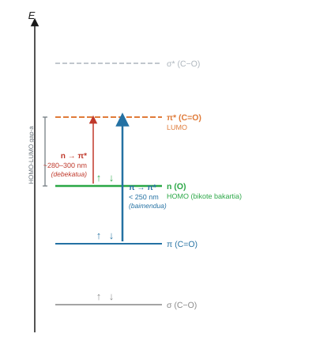

UV-Vis espektroskopia zetonetan#
Sarrera#
Erradiazio ultramore-ikusgaiaren xurgapenak trantsizio elektronikoak eragiten ditu molekula organikoetan, balentzia-orbitaletako elektroiak energia handiagoko orbitaletara igaroz. Dentsitatearen funtzionalaren teoria denboraren mendekoa (TD-DFT) erabiliz Gaussian programan, kitzikapen horiek simula daitezke, dentsitate elektronikoaren berrantolaketa kontuan hartuta. Praktika honetan, xurgapen-uhin-luzerak eta osziladore-indarrak kalkulatzen dira \(n \rightarrow \pi^*\) eta \(\pi \rightarrow \pi^*\) trantsizioetarako zetonetan, disolbatzailearen polaritateak espektroko bandak nola desplazatzen dituen aztertuz.
Helburuak#
Aurretiazko xurgapen-uhin-luzera zenbatestea orbital-energien diferentziatik abiatuta (\(\Delta E_{\text{gap}}\) HOMO-LUMO).
Kitzikapen bertikalen energiak kalkulatzea singlete egoeretara TD-DFT metodologia erabiliz B3LYP/6-311G-rekin.
Trantsizio elektronikoak \(n \rightarrow \pi^*\) eta \(\pi \rightarrow \pi^*\) esleitzea, beren energia eta osziladore-indarraren arabera (\(f\)).
Azetonaren desplazamendu solbatokromikoa uretan kuantifikatzea, disolbatzailearen polarizazio jarraituaren ereduaren bidez (PCM).
Kalkulatutako xurgapen-espektroak balio esperimentalekin alderatzea, ingurunearen polaritatearen eta ordezkatzaile alkilikoaren arabera.
Kontzeptu gakoak#
Trantsizio elektronikoak konposatu karbonilikotan#
C=O taldean, bi trantsizio garrantzitsu daude: \(n \rightarrow \pi^*\), non oxigenoaren bikote bakarti ez-lotzaileko elektroi bat karboniloaren \(\pi^*\) orbital antilotzailea igarotzen den, eta \(\pi \rightarrow \pi^*\), non elektroia lotura bikoitzaren \(\pi\) orbital lotzailetik abiatzen den. \(n \rightarrow \pi^*\) trantsizioa 280-300 nm inguruan agertzen da eta intentsitate txikia du; \(\pi \rightarrow \pi^*\) 250 nm-tik behera dago eta askoz intentsuagoa da. Intentsitate-diferentzia hori osziladore-indarrean islatzen da (\(f\)): zero inguruko balioak \(n \rightarrow \pi^*\)-rentzat eta 0.1-1 ordenakoak \(\pi \rightarrow \pi^*\)-rentzat.


HOMO-LUMO tartea aurretiazko zenbatespen gisa#
HOMO eta LUMO orbitalen arteko energia-diferentziak kitzikapen minimoaren energia zenbatesten du zuzenean. Elektronvoltetan eta uhin-luzeran bihurtuta, xurgapen-espektroaren eremua aurreikusten du kalkulu osoa egin aurretik. Zenbatespen honek sistematikoki gainestimatzen du trantsizio-energia, ez baitu kontuan hartzen egoera kitzikatuaren erlaxazioa.
Disolbatzailearen efektua: solbatokromismoa#
\(n \rightarrow \pi^*\) trantsizioan, karboniloaren oinarrizko egoera kitzikatua baino polaragoa da. Disolbatzaile polar batek oinarrizko egoera egonkortzen du nagusiki, bi egoeren arteko energia-diferentzia handitzen du eta banda uhin-luzera txikiagoetara desplazatzen du (efektu hipsokromikoa edo urdineranzko desplazamendua). Gaussianek efektu hau PCM polarizazio jarraituaren ereduaren bidez modelizatzen du, disolbatzailea ingurune dielektriko homogeneo gisa irudikatzen duena, bere konstante dielektrikoak karakterizatuta. Zehazteko, scrf=(solvent=nombre) gakoa gehitzen da Additional Keywords eremuan.
Azetonarentzako erreferentziazko balio esperimentalak:
Disolbatzailea |
\(\lambda\ (n \rightarrow \pi^*)\) esperimentala (nm) |
|---|---|
Ziklohexanoa (apolarra) |
279 |
Ura (oso polarra) |
264 |
Aldaketa (\(\Delta \lambda\)) |
-15 nm (urdineranzko desplazamendua) |
Oharra
\(n \rightarrow \pi^*\) trantsizioko urdineranzko desplazamendu solbatokromikoa (hipsokromikoa) inplikatutako egoera elektronikoen polaritate ezberdinaren ondorio da. Oinarrizko egoeran (\(S_0\)), karbonilo taldeak momentu dipolar handia du eta oxigenoaren bikote bakartiek hidrogeno-loturak eratzen dituzte disolbatzaile polar protikoekin, hala nola urarekin. Trantsizio elektronikoan zehar, karga \(\pi^*\) sistemara birbanatzeak momentu dipolarra murrizten du egoera kitzikatuan (\(S_1\)), eta horrek solbatazioaren egonkortzea murrizten du eta kitzikapen bertikalerako beharrezko energia handitzen du.
Prozedura#
A atala: Aurretiazko zenbatespena HOMO-LUMO tartearekin#
A1 urratsa: Geometria optimizatzea disolbatzailean#
Azetona GaussView-n eraiki eta Edit → Clean aplikatu.
Ireki Calculate → Gaussian Calculation Setup, hautatu Job Type → Optimization eta sartu parametro hauek:
Eremua |
Balioa |
|---|---|
Metodoa |
|
Oinarri-multzoa |
|
Karga |
0 |
Spin |
1 |
Gako-hitz gehigarriak |
|
Gorde
acetona_MeCN_opt.gjfgisa__PROTECTED_BLOCK_17__EspectroscopiaUV/karpetan eta abiarazi.
A2 urratsa: HOMO eta LUMO autobalioak ateratzea#
Optimizazioaren
.logfitxategian (acetona_MeCN_opt.log), bilatu Ctrl + F bidez testu hau:Alpha occ. eigenvalues.Identifikatu azken errenkadako azken balio numerikoa, HOMO orbitalaren energiari dagokiona (\(\varepsilon_{\text{HOMO}}\) hartree-tan).
Identifikatu hurrengo errenkadako lehen balio numerikoa, LUMO orbitalaren energiari dagokiona (\(\varepsilon_{\text{LUMO}}\) hartree-tan).
Kalkulatu energia-diferentzia \(\Delta E_{\text{gap}} = (\varepsilon_{\text{LUMO}} - \varepsilon_{\text{HOMO}}) \times 27.2114\) eV-tan.
Estimatu xurgapen-uhin luzera: \(\lambda_{\text{estimada}} = 1239.8 / \Delta E_{\text{gap}}\text{ (eV)}\) nm-tan.
Idatzi lortutako balio numerikoak A taulan.
B atala: Xurgapen-espektroaren TD-DFT kalkulua#
B1 urratsa: TD-DFT kalkulua konfiguratzea#
GaussView-n, ireki aurrez optimizatutako geometriaren fitxategia (
acetona_MeCN_opt.logedo dagokion.chk) File → Open bidez.Sartu Calculate → Gaussian Calculation Setup menura.
Job Type fitxan, hautatu Energy (puntu bakarreko kalkulua oreka-egituran).
Method fitxan, mantendu Method B3LYP, Basis Set 6-311G, Charge 0, Spin 1.
Title fitxan, idatzi:
Acetona TD-DFT B3LYP 6-311G MeCN.Beheko Additional Keywords eremuan, idatzi:
td scrf=(solvent=acetonitrile) geom=connectivity.Sakatu Submit, gorde
acetona_MeCN_td.gjfgisa__PROTECTED_BLOCK_18__EspectroscopiaUV/karpetan eta berretsi kalkulua Save eta Submit bidez.Egiaztatu
__PROTECTED_BLOCK_19__lerroaren presentzia.logfitxategian.
B2 urratsa: Kitzikatutako egoeren datuak .log fitxategitik ateratzea#
Ireki
.logfitxategia (acetona_MeCN_td.log) testu-editorean.Bilatu Ctrl + F bidez kate hau:
Excited State 1.Atera lehen egoera kitzikatu singletearen datu kuantitatiboak:
Kalkulatutako uhin-luzera (\(\lambda\)) nanometrotan (nm).
Kitzikapen-energia elektronvoltetan (eV).
Osiladorearen indarra (\(f\)).
Behatu trantsizioari lotutako orbitalen lerroak (jatorria eta helmuga) kitzikapen mota baieztatzeko.
Identifikatu osiladore-indar txikieneko banda 270-300 nm inguruan \(n \rightarrow \pi^*\) trantsizio gisa.
B3 urratsa: Espektroa GaussView-n bistaratzea#
GaussView-n, ireki
acetona_MeCN_td.logfitxategia File → Open bidez.Sartu Results → UV-Vis menura.
Aztertu sortutako espektro elektroniko sintetikoa:
Barra bertikalek trantsizio diskretuak adierazten dituzte, altuera \(f\) osiladore-indarrarekiko proportzionala delarik.
Kurba jarraituak profil konboluzionatua erakusten du.
Identifikatu banda ahula \(n \rightarrow \pi^*\) banda intentsuaren \(\pi \rightarrow \pi^*\) aurrean, 250 nm-tik beherako uhin-luzeretan.
C atala: Disolbatzaile-seriea eta solbatokromismoa#
Errepikatu TD-DFT kalkulua azetona gainean, jada optimizatutako geometrian, disolbatzailearen gako-hitza bakarrik aldatuz Additional Keywords atalean:
Disolbatzailea |
Additional Keywords |
|---|---|
Hutsa (gas) |
|
Ziklohexanoa |
|
Kloroformoa |
|
Etanola |
|
Azetonitriloa |
|
Ura |
|
Gorde fitxategi bakoitza izen deskribatzailearekin __PROTECTED_BLOCK_20__EspectroscopiaUV/ karpetan eta atera \(\lambda\) eta \(f\) Excited State 1 fitxategi bakoitzetik.
D atala: Zetona ordezkatuen seriea#
Errepikatu prozedura osoa (optimizazioa + TD-DFT azetonitriloan) ondorengo lau konposatuentzat:
Konposatua |
Egitura |
|---|---|
Azetil kloruroa |
CH₃–CO–Cl |
Azetofenona |
CH₃–CO–C₆H₅ |
Azido azetikoa |
CH₃–CO–OH |
Metil-etil-zetona |
CH₃–CO–CH₂CH₃ |
Horietako bakoitzarentzat, atera \(\lambda\) eta \(f\) Excited State 1 fitxategitik eta konparatu \(n \rightarrow \pi^*\) bandaren desplazamendua azetonarekiko.
Bibliografia#
Gaussian 16, Revision A.03, M. J. Frisch, G. W. Trucks, H. B. Schlegel et al., Gaussian, Inc., Wallingford CT, 2016.
Atkins, P.; De Paula, J. Química Física, 10. ed.; Editorial Médica Panamericana, 2018. 13. kapitulua (Espektroskopia elektronikoa).
Casida, M. E. Time-Dependent Density Functional Theory for Molecules. In Recent Advances in Density Functional Methods; World Scientific, 1995.
NIST Chemistry WebBook, https://webbook.nist.gov (ultramore-ikusgai xurgapen-espektroen erreferentzia).
Urrunago joateko (aukerakoa)
GaussView-k trantsizio kalkulatu bakoitza barra diskretu gisa erakusten du, altuera \(f\) osiladore-indarrarekiko proportzionala delarik. Profil jarraitu bat lortzeko, espektro esperimentalarekin konparagarria, barra horiek funtzio gausstarrekin konboluzionatzen ditugu, zabalera egokia erabiliz. .log fitxategiko egoera kitzikatuen zerrenda kalkulu-orri batera esportatuz eta konboluzioa aplikatuz, banda-forma erreproduzitu dezakegu eta maximoen posizioa NIST Chemistry WebBook-eko datuekin konparatu.